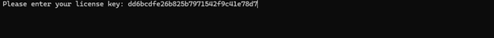
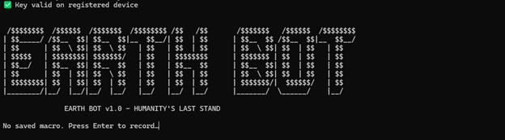
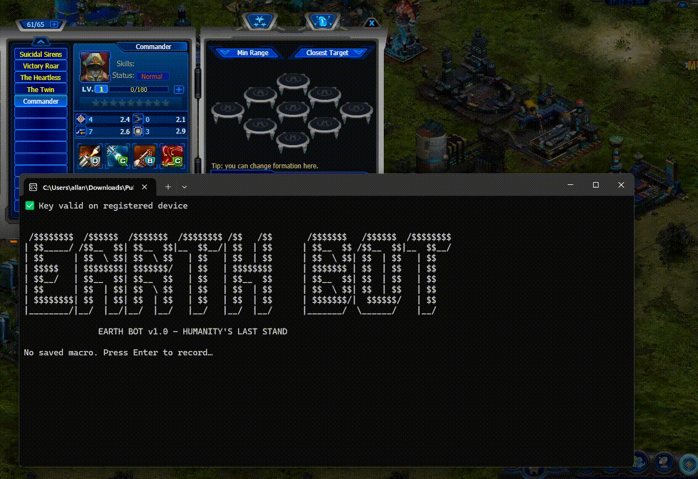
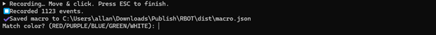
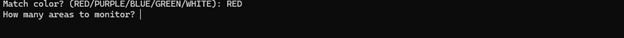
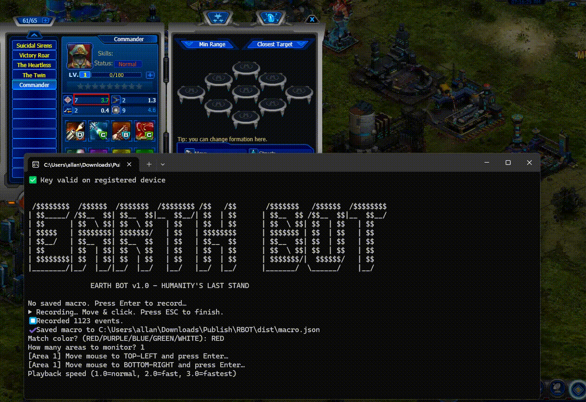

EARTH BOT
V 1.0
First, upon opening the Earth Bot it will ask for the license key, the key will be provided to you directly, copy and paste it into the terminal and press ENTER


Once you press ENTER the program will verity the key and give you access, now you need to set a macro, is the movement the mouse will do when you execute the program, you have to setup a good macro otherwise the bot could fail to stop the mouse movements on time, a good macro means not moving the mouse too fast or too slow, just move the mouse as if you were going to reset the commander normally, you can add a small pause at the end to increase the probability of the bot working as expected.
VIDEO TUTORIAL - MUST WATCH TO USE THE BOTNow to record the macro just select the terminal whilst on top of the game, then press ENTER and move the mouse as if you were resetting the commander stats, once youre done press ESC and the macro will be recorded.

Then you will need to tell the program which stat are you looking for, it could be perfect, excellent, good, ok and bad, this is represented by the colors of them shown on the game, so we all want the best stat which is 5, so that is red, so you would place the word red on the terminal and press enter.

Once this is done now you need to define the areas that it will monitor, meaning the amount of stats it will be checking for, for example if want to have 5 on two stats, you would have 2 areas, so you place 2 on the terminal, if you only want to check for one stats then you place 1 on the terminal.

Moving on you need to define the areas on the screen, just place the terminal on top of the game and move the mouse to the left top corner of the stat area, then press ENTER then move it to the bottom corner and press ENTER, this will highlight the area that you selected, do this for all the number of areas you selected.

Lastly the program will ask for the speed you want to play the macro, basically the speed it will reset a commander, place the number 3 for the fastest number of resets per minute, once done just press enter and the bot will start to reset the commander until you get 5 on all the stats you selected.
You must repeat this for every commander you want to reset, the macro however only needs to be recorded once, so make sure its a good one.
You are not allowed to distribute or share the
Earth Bot in any way, doing so will get your license suspended and you will lose
access to the Bot.